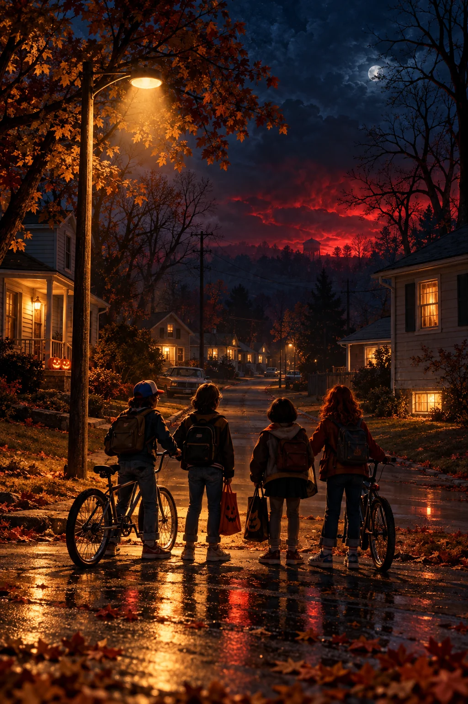

A留在他身边推荐方向  HAWKINS, 1984近景 / 第一人称 他停下时，你就在身边。 手部仅作构图示意你会留下吗00:18 一只伸出的手，让观众进入故事。讨糖的热闹忽然远去，Will 站在原地。镜头回到你的手，停在他回应之前，再切入真实行动选项。开场：刹车急停，糖纸响了一声。 现有插画裁切＋手部构图草图；最终场景待制作。
B今晚多一个你 OCTOBER 31远景 / 青春群像 今晚的队伍，给你留了位置。 跟上，天要黑了00:06 先让人想加入，再让人不敢离开。自行车、糖袋、暖窗和朋友间的玩笑铺满夜色。队伍继续往前，只有 Will 停了半步。开场：车轮压过落叶，朋友催你跟上。 直接复用现有封面，作为群像方向的视觉基准。
C地下室里的下一步 TONIGHT'S PLANhome before nine 20 OCT WHEELER'S BASEMENT俯视 / 线索道具 路线还没定，故事已经开始。 下一步，你来决定00:03 把冒险的入口，放在你的手边。骰子压着地图，对讲机传来底噪。你参与商量路线，再走到平台里真正等待你决定的街口。开场：骰子碰桌，旋钮咔嗒一响。 桌面道具构图草图；地图为示意，不是游戏地图功能。